After completing this lesson, students will be able to:
understand the classification of animal kingdom.
identify and study the different groups of animals.
list out the general characteristics of animals based on grades of organization, types of symmetry, coelom and various body activity.
recognize that binomial classification has Latin and Greek words.
identify the first name as genus and second name as species.
recall the salient features of each phylum.
The variety of living organisms surrounding us is incomprehensible. Nearly 1.5 million species of organism which have been described are different from one another. The uniqueness is due to the diversity in the life forms whether it is microbes, plants or animals. Every organism exhibits variation in their external appearance, internal structure and behavior, mode of living etc. This versatile nature among the living animals forms the basis of diversity. The diversity among the living organisms can be studied in an effective way by arranging animals in an orderly and systematic manner. The study of various organisms would be difficult without a suitable method of classification.
The method of arranging organism into groups on the basis of similarities and differences is called classification. Taxonomy is the science of classification which makes the study of wide variety of organisms easier. It helps us to understand the relationship among different group of animals. The first systematic approach to the classification of living organisms was made by a Swedish botanist, Carolus Linnaeus. He generated the standard system for naming organisms in terms of genus, species and more extensive groupings using Latin terms.
Classification is the ordering of organism into groups on the basis of their similarities, dissimilarities and relationships. The five kingdom classification are Monera, Protista, Fungai, Plantae and Animalia. These groups are formed based on cell structure, mode of nutrition, body organization and reproduction. On the basis of hierarchy of classification, the organisms are separated into smaller and smaller groups which form the basic unit of classification.
Species: It is the lowest taxonomic category. For example, the large Indian parakeet Bracket OPEN Psittacula eupatra bracket closed and the green parrot Bracket OPEN Psittacula krameribracket closed are two different species of birds. They belong to different species eupatra and krameri and cannot interbreed.
Genus: It is a group of closely related species which constitute the next higher category called genus. For example, the Indian wolf Bracket OPEN Canis pallipes bracket closed and the Indian jackal Bracket OPEN Canis aure sbracket closed are placed in the same genus Canis.
Family: A group of genera with several common characters form a family. For example, leopard, tiger and cat share some common characteristics and belong to the larger cat family Felidae.
Order: A number of related families having common characters are placed in an order. Monkeys, baboons, apes and Man although belong to different families, are placed in the same order Primates. Since all these animals possess some common features, they are placed in the same order.
Class: Related or similar orders together form a class. The orders of different animals like those of rabbit, rat, bats, whales, chimpanzee and human share some common features such as the presence of skin and mammary glands. Hence, they are placed in class Mammalia.
Phylum: Classes which are related with one another constitute a phylum. The classes of different animals like mammals, birds, reptiles, frogs and fishes constitute Phylum Chordata which have a notochord or back bone.
Kingdom: It is the highest category and the largest division to which microorganisms, plants and animals belong to. Each kingdom is fundamentally different from one another, but has the same fundamental characteristics in all organisms grouped under that Kingdom.
The taxa of living organisms are in a hierarchy of categories as follows.
Kingdom
Phylum
Class
Order
Family
Genus
Species
We can divide the Animal kingdom based on the level of organization Bracket OPEN arrangement of cells bracket closed, body symmetry, germ layers and nature of seelam.
Level of organization: Animals are grouped as unicellular or multicellular based on cell, tissue, organ and organ system level of organization
Symmetry: It is a plane of arrangement of body parts. Radial symmetry and bilateral symmetry are the two types of symmetry. In radial symmetry the body parts are arranged around the central axis. If the animal is cut through the central axis in any direction, it can be divided into similar halves. Example Hydra, jelly fish and star fish. In bilateral symmetry, the body parts are arranged along a central axis. If the animal is cut through the central axis, we get two identical halves Example Frog.
Figure 17.1 Radial and Bilateral Symmetry image was given below
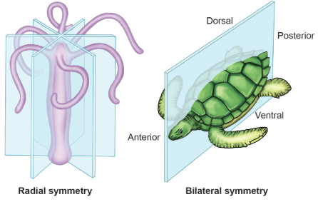
Germ layers Germ layers are formed during the development of an embryo. These layers give rise to different organs, as the embryo becomes an adult.
Organisms with two germ layers, the ectoderm and the endoderm are called
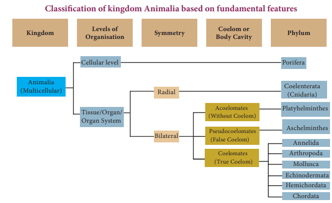
diploblastic animals. Example Hydra. Organisms with three germ layers, ectoderm, mesoderm and endoderm are called triploblastic animals. Example Rabbit
seelam: It is a fluid-filled body cavity. It separates the digestive tract from the body wall. A true body cavity or seelam is one that is located within the mesoderm. Based on the nature of the seelam, animals are divided into 3 groups.
1. Aseelomates do not have a body cavity Example Tapeworm.
2. Pseudoseelomates have a false body cavity Example Roundworm.
3. seelomates or Euseelomates have a true seelam Example Earthworm, Frog.
Animal Kingdom is further divided into two groups based on the presence or absence of notochord as below.
1. Invertebrata
2. car data Procardata and Vertebrata
Animals which do not possess notochord are called as Invertebrates or Non cardates. Animals which possess notochord or backbone are called as cardates. You have already studied the characters of single celled protozoans.
BOX ITEM OPEN
Notochord is a rod like structure formed on the mid-dorsal side of the body during embryonic development. Except primitive forms in which the notochord persists throughout life in all other animals it is replaced by a backbone. BOX ITEM ENDS
Figure 17.2 Types of seelam image was given below
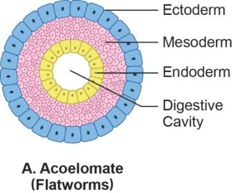
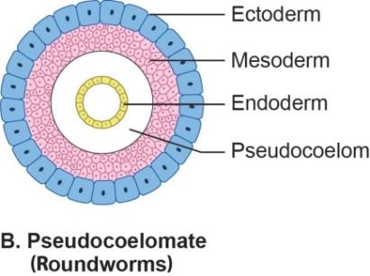
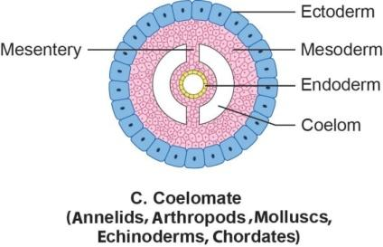
Carolus Linnaeus introduced the method of naming the animals with two names known as binomial nomenclature. The first name is called genus and the first letter of genus is denoted in capital and the second one is the species name denoted in small letter. The binomial names of some common animals are as follows.
Common name Binomial name table was given below
Amoeba |
Amoeba proteus |
Hydra |
Hydra vulgaris |
Tapeworm |
Taenia solium |
Roundworm |
Ascaris lumbricoides |
Earthworm |
Lampito mauritii/ Perionyxexcavatus |
Leech |
Hirudinaria granulosa |
Cockroach |
Periplaneta americana |
Snail |
Pila globosa |
Starfish |
Asterias rubens |
Frog |
Rana hexadactyla |
Walllizard |
Podarcis muralis |
Crow |
Corvus splendens |
Peacock |
Pavo cristatus |
Dog |
Canis familiaris |
Cat |
Felis felis |
Tiger |
Panthera tigris |
Man |
Homo sapiens |
These are multicellular, non-motile aquatic organisms, commonly called as sponges. They exhibit cellular grade of organization. Body is perforated with many pores called ostia. Water enters into the body through ostia and leads to a canal system. It circulates water throughout the body and carries food, oxygen. The body wall contains spicules, which form the skeletal framework. Reproduction is by both asexual and sexual methods. Example - Euplectella, Sycon.
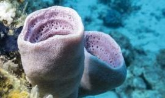
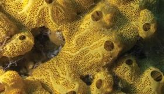
Euplectella Sycon
Figure 17.3 Pore bearers
seelenterata are aquatic organisms, mostly marine and few fresh water forms. They are multicellular, radially symmetrical animals, with tissue grade of organization. Body wall is diploblastic with two layers. An outer ectoderm and inner endoderm are separated by noncellular jelly like substance called mesoglea. It has a central gastrovascular cavity called seelenteron with mouth surrounded by short tentacles. The tentacles bear stinging cells called cnidoblast or nematocyst.
Figure 17 4 jelly fish image was given below
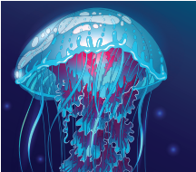
Many coelenterates exhibit polymorphism, which is the variation in the structure and function of the individuals of the same species. They reproduce both asexually and sexually. Example Hydra, Jellyfish.
They are bilaterally symmetrical, triploblastic, acoelomate Bracket OPEN without body cavity bracket closed animals. Most of them are parasitic in nature. Suckers and hooks help the animal to attach itself to the body of the host. Excretion occurs by specialized cells called flame cells. These worms are hermaphrodites having both male and female reproductive organs in a single individual. Example Liverfluke, Tapeworm.
Figure 17.5 Flat worms image was given below
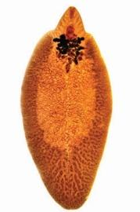
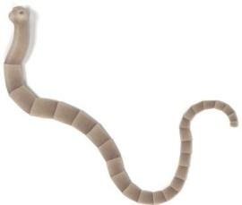
Liverfluke Tapeworm
Aschelminthes are bilaterally symmetrical, triploblastic animals. The body cavity is a pseudocoelom. They exist as free-living soil forms or as parasites. The body is round and pointed at both the ends. It is unsegmented and covered by thin cuticle. Sexes are separate. The most common diseases caused by nematodes in human beings are elephantiasis and ascariasis. Example Ascaris, Wuchereria Figure 17.6 Round worms image was given below
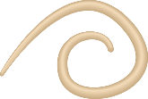
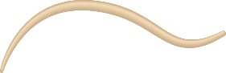
These are bilaterally symmetrical, triploblastic, first true coelomate animals with organ-system grade of organization. Body is externally divided into segments called metameres joined by ring like structures called annuli. It is covered by moist thin cuticle. Setae and parapodia are locomotor organs. Sexes may be separate or united Bracket OPEN hermaphroditesbracket closed. Example Nereis, Earthworm, Leech.
Figure 17.7 Segmented worms image was given below
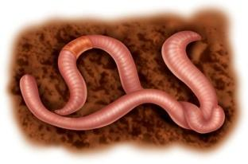
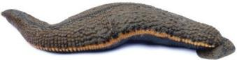
Earth worm Leech
Arthropoda is the largest phylum of the animal kingdom. They are bilaterally symmetrical, triploblastic and coelomate animals. The body is divisible into head, thorax and abdomen. Each thorasic segment bears paired jointed legs. Exoskeleton is made of chitin and is shed periodically as the animal grows. The casting off and regrowing of exoskeleton is called moulting.
Body cavity is filled with haemolymph Bracket OPEN blood bracket closed. The blood does not flow in blood vessels and circulates throughout the body Bracket OPEN open circulatory system bracket closed. Respiration is through body surface, gills or tracheae Bracket OPEN air tubes bracket closed. Excretion occurs by malphigian tubules or green glands. Sexes are separate. Example, Prawn, Crab, Cockroach, Millipede, Centipedes, Spider, Scorpion.
Figure 17.8 Animals with jointed legs image was given below
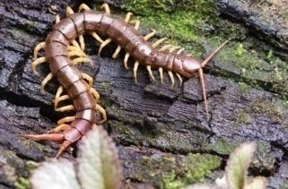
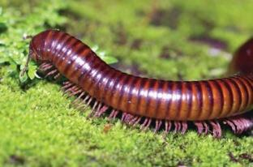
Centipede Millipede
BOX ITEM OPEN
Centipede means ‘hundred legs’. But most species have only 30 pairs. Millipedes have two pairs of legs on each segment. This name means ‘thousand legs’. But, most millipedes have only about a hundred.BOX ITEM ENDS
BOX ITEM OPEN
Identify the following pictures of Arthropods.
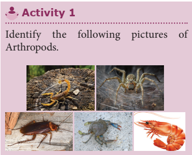
BOX ITEM ENDS
They are diversified group of animals living in marine, fresh water and terrestrial habitats. Body is bilaterally symmetrical, soft and without segmentation. It is divided into head, muscular foot and visceral mass. The foot helps in locomotion. The entire body is covered with fold of thin skin called mantle, which secretes outer hard calcareous shell. Respiration is through gills Bracket OPEN ctenidia bracket closed or lungs or both. Sexes are separate with larval stages during development. Example Garden snail, Octopus.
Figure 17.9 Garden Snail Image was given below
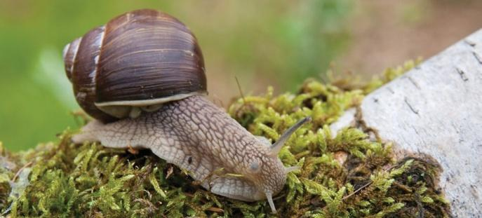
Octopus is the only invertebrate that is capable of emotion, empathy, cognitive function, self awareness, personality and even relationships with humans. Some speculate that without humans, octopus would eventually take our place as the dominate life form on earth.
Box item image was given
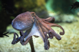
box item ends
They are exclusively free-living marine animals. These are triploblastic and true coelomates with organ-system grade of organization. Adult animals are radially symmetrical but larvae remain bilaterally symmetrical. A unique feature is the presence of fluid filled water vascular system. Locomotion occurs by tube feet. Body wall is covered with spiny hard calcareous ossicles. Example Star fish, Sea urchin.
Figure 17.10 Spiny Skinned Animals image was given below
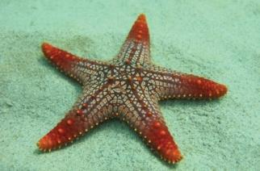
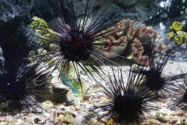
Star Fish Sea UrchinHemichordates are marine organisms with soft, vermiform and unsegmented body. They are bilaterally symmetrical, coelomate animals with non-chordate and chordate features. They have gill slits but do not have notochord. They are ciliary feeders and mostly remain as tubiculous forms. Example Balanoglossus Bracket OPEN Acorn worms bracket closed.
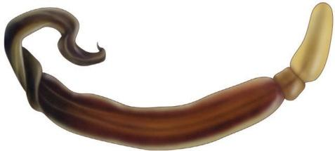
Figure 17.11 Balanoglossus
Cardates are characterized by the presence of notochord, dorsal nerve cord and paired gill pouches. Notochord is a long rod like support along the back of the animal separating the gut and nervous tissue. All cardates are triploblastic and coelomate animals. Phylum Cardata is divided into two groups: Procardata and Vertebrata.
The prochordates are considered as the forerunners of vertebrates. Based on the nature of the notochord, procardata is classified into subphylum Urocardata and subphylum Cephalocardata.
Notochord is present only in the tail region of free-living larva. Adults are sessile forms and mostly degenerate. The body is covered with a tunic or test. Example Ascidian
Figure 17.12 Ascidian image was given below
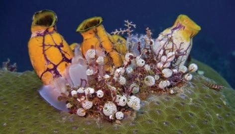
Cephalocardates are small fish like marine cardates with unpaired dorsal fins. The notochord extends throughout the entire length of the body. Example Amphioxus
Figure 17.13 Amphioxus image was given below
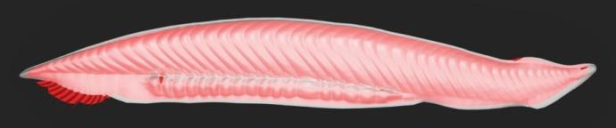
This group is characterized by the presence of vertebral column or backbone. Notochord in an embryonic stage gets replaced by the vertebral column, which forms the chief skeletal axis of the body. Vertebrata are grouped into six classes.
Cyclostomes are jawless vertebrates Bracket OPEN mouth not bounded by jaws bracket closed. Body is elongated and eel like. They have circular mouth. Skin is slimy and scaleless. They are ectoparasites of fishes. Example Hagfish.
Figure 17.14 Lamprey image was given below
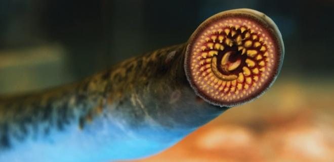
Fishes are poikilothermic Bracket OPEN cold-blooded bracket closed, aquatic vertebrates with jaws. The streamlined body is divisible into head, trunk and tail. Locomotion is by paired and median fins. Their body is covered with scales. Respiration is through gills. The heart is two chambered with an auricle and a ventricle. There are two main types of fishes.
Bracket OPEN 1 bracket closed Cartilaginous fishes, with skeleton made of cartilages Example Sharks, Skates.
Bracket OPEN 2 bracket closed Bony fishes with skeleton made of bones Example Carps, Mullets.
Figure 17.15 Shark image was given below
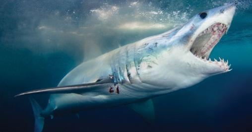
Box item OPEN
The smallest vertebrate, Philippine goby/dwarf pygmy goby is a tropical species fish found in brackish water and mangrove areas in south East Asia, measuring only 10 mm in length.
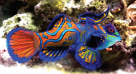
BOX ITEM ENDS
These are the first four legged Bracket OPEN tetrapods bracket closed vertebrates with dual adaptation to live in both land and water. The body is divisible into head and trunk. Their skin is moist and have mucus glands. Respiration is through gills, lungs, skin or buccopharynx. The heart is three chambered with two auricles and one ventricle. Eggs are laid in water. The tadpole larva, transforms into an adult. Example Frog, Toad.
Box item open
The Chinese giant salamander Andrias davidians is the largest amphibian in the world. Its length is about five feet and eleven inches. It weighs about 65 kg, found in Central and South China. box item ends
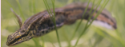
These vertebrates are fully adapted to live on land. Their body is covered with horny epidermal scales. Respiration is through lungs. The heart is three chambered with an exemption of crocodiles, which have four-chambered heart. Most of the reptiles lay their eggs with tough outer shell Example Calotes, Lizard, Snake, Tortoise, Turtle.
Figure 17.16 Calotes image was given below
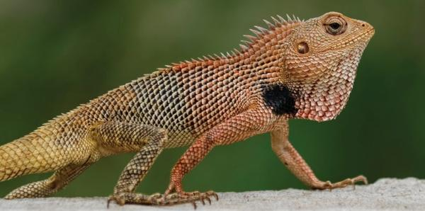
Birds are homeothermic Bracket OPEN warm blooded bracket closed animals with several adaptations to fly. The spindle or boat shaped body is divisible into head, neck, trunk and tail. The body is covered with feathers. Forelimbs are modified into wings for flight. Hindlimbs are adapted for walking, perching or swimming. The respiration is through lungs, which have air sacs. Bones are filled with air Bracket OPEN pneumatic bones bracket closed, which reduces the body weight. They lay large yolk laden eggs. They are covered by hard calcareous shell. Example Parrot, Crow, Eagle, Pigeon, Ostrich .
Figure 17.17 Pigeon image was given below
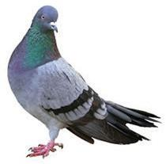
Box item open
More to Know
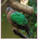
State bird of Tamil Nadu
Common Emerald dove. Bracket OPEN Chalcophaps indica bracket closed box item ends
Mammals are warm-blooded animals. The skin is covered with hairs. It also bears sweat and sebaceous Bracket OPEN oil bracket closed glands. The body is divisible into head, neck, trunk and tail. Females have mammary glands, which secrete milk for feeding the young ones. The external ears or pinnae is present. Heart is four chambered and they breathe through lungs. Except egg laying mammals Bracket OPEN Platypus, and Spiny ant eater bracket closed, all other mammals give birth to their young ones Bracket OPEN viviparous bracket closed. Placenta is the unique characteristic feature of mammals.Example Rat, Rabbit, Man.
Classification of Phylum Chordata image was given below
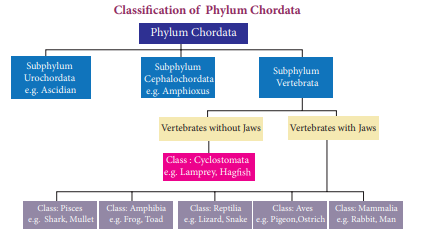
Figure 17.18 Rabbit image was given below
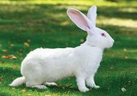
Box item open
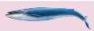
The gigantic Blue whale which is 35 meters long and 120 tons in weight is the biggest vertebrate animal. Box item ends
Classification is the ordering of organism into groups on the basis of their similarities, dissimilarities and relationships.
Animals are grouped as unicellular or multicellular based on cell, tissue, organ and organ system level of organization.
In radial symmetry the body parts are arranged around the central axis.
In bilateral symmetry, the body parts are arranged along a central axis.
seelam is a fluid-filled body cavity. It separates the digestive tract from the body wall. Animals which do not possess notochord structure are called as Invertebrates or Non- cardates.
Animals which possess notochord or backbone are called as Cardates.
The pro cardates are considered as the forerunner of vertebrates.
Aseelomates Animals which do not have a body cavity.
Amphibian Cold-blooded vertebrate animal of a class that comprises the frogs, toads, newts, salamanders.
Annelida Phylum that comprises the segmented worms which include earthworms and leeches.
Aves Vertebrates which comprises the birds.
seelomates Animals which have a true seelam Example Earthworm, Frog.
Classification Arrangement of groups of animals, the members of which have one or more characteristics in common.
Mammals Warm-blooded vertebrate animals that possess hairs, mammary glands and feed their young ones.
Pseudoseelomates False body cavity which is not bounded by true epithelial lining. Example Roundworm
Toads Anurans with smooth skin than that of frogs, terrestrial and leap rather than jump